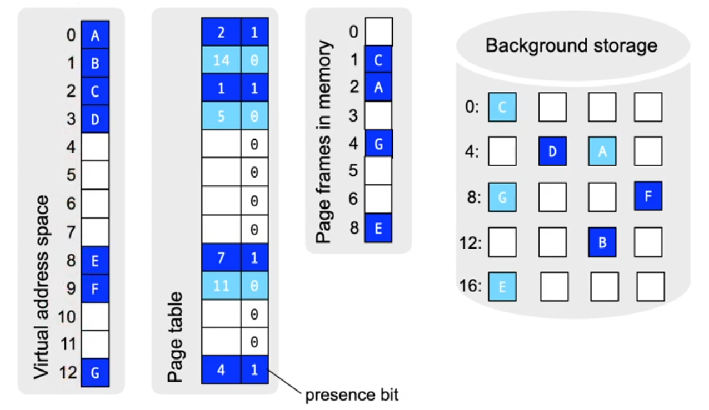
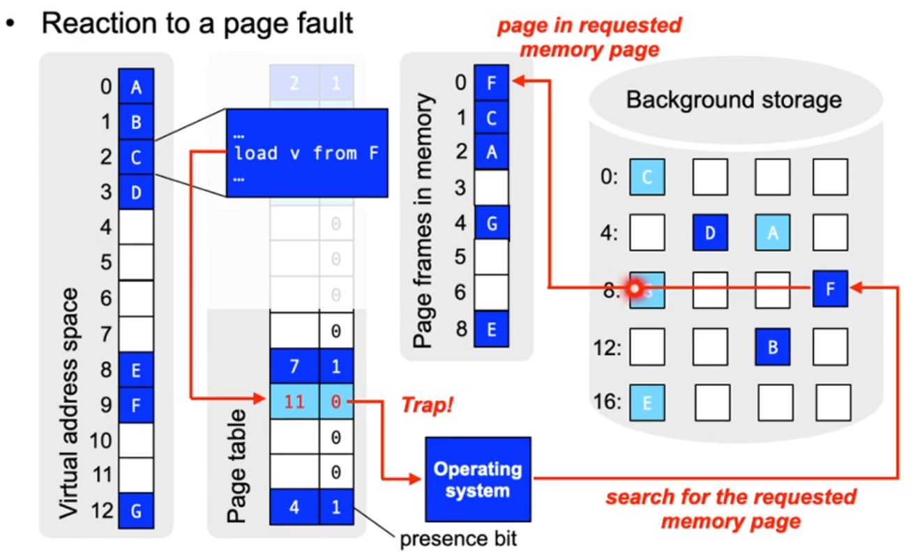
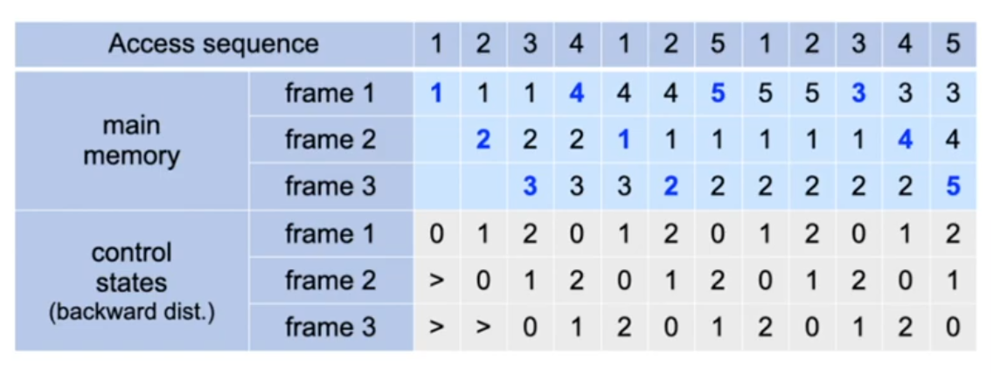
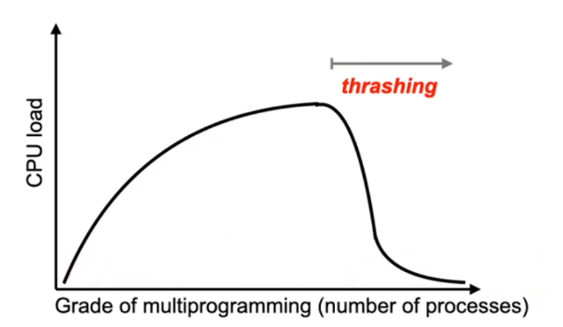
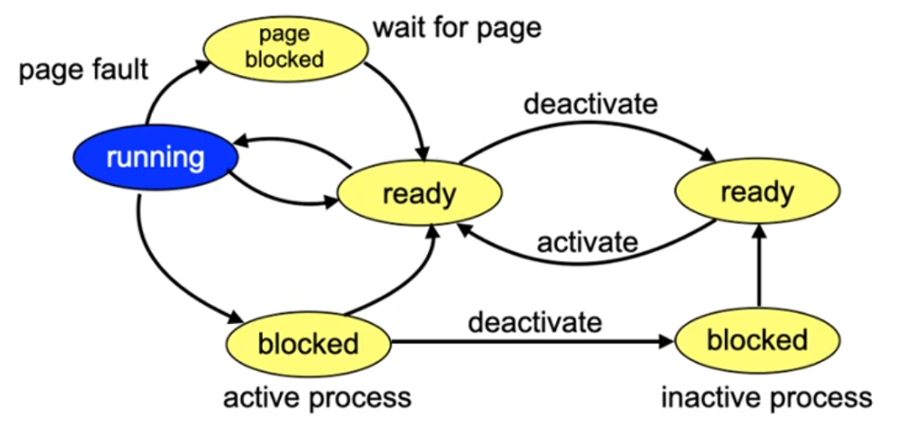

lecture.10
Lecture 10, part 1: Virtual memory and replacement strategies
Exam
Details on concepts and implementation of virtual memory
Important questions:
- What is the locality principle in computers?
- Which kinds of locality exist, can you describe their properties?
- How can locality be used to optimize performance?
- What is the idea behind virtual memory, which abstraction/illusion is created by virtual memory?
- How does demand paging work?
- What is a page fault and how is it handled?
- What are tasks of the OS and hardware when handling page faults?
- Can you name different page replacement strategies and discuss their pros/cons? (FIFO, optimal, LRU, second chance)
- Can you simulate different strategies given an access sequence?
- Can you define thrashing and name causes and possible solutions?
- What is the working set of a process and how can you determine it?
Locality of memory accesses
- The execution of single instructions only requires the presence of very few memory pages
- This strong locality also manifests itself over longer periods of time
- e.g. instructions are usually executed one after the other (without jump or exceptions)
- This locality can be exploited when the system is running out of available main memory
- e.g. using overlays
The idea of "virtual memory"
- Decouple the memory requirements from the available amount of main memory
- Processes do not access all memory locations with the same frequency
- certain instructions are used (executed) only very infrequently or not at all (e.g. error handling code)
- certain data structures are not used to their full extent
- Processes can use more memory than available as main memory
- Processes do not access all memory locations with the same frequency
- Idea:
- Create the illusion of a large main memory
- Make currently used memory areas available in main memory
- Intercept accesses to areas currently not present i main memory
- Provide required areas on demand
- Swap or page out areas which are (currently) not used
Demand paging
- Providing pages on demand


Discussion: paging performance
- Performance of demand paging
- No page faults:
- Effective access time ~10-200 ns
- When a page fault occurs:
- Let p be the probability of a page fault
- Assume that the time required to page in a page from background memory = 25 ms (8 ms latency, 15 ms positioning time, 1 ms transfer time)
- Assume a normal access time of 100 ns
- Effective access time: (1 - p) _ 100 + p _ 25 000 000
- No page faults:
-> Page fault rate has to be extremely low (p is close to 0)
Discussion: additional properties
- Process creation
- Copy on write
- Easy to implement also using a paging MMU
- More fine grained compared to segmentation
- Program execution and loading can be interleaved
- Requrested pages are loaded on demand
- Copy on write
- Locking the access to pages
- Required for I/O operations
Discussion: demand segmentation
- In principle possible, but this comes with disadvantages
- Coarse granularity
- e.g. code, data, stack segment
- Difficult main memory allocation
- With paging, all free page frames are equally useful
- When swapping segments, the search for appropriate memory areas is more difficult
- Background memory allocation is more difficult
- The background memory is divided into blocks, similar to page frames (sizes = 2^n)
- Coarse granularity
Demand paging has won in practice!
Page replacement
- What if no free page fram is available when a request comes in?
- One page has to be preempted to create space for the new page!
- Select pages with unchanged content (refer to the dirty bit in the page table entries)
- Preemption of a page implies paging it to disk if its contents were changed
- Sequence of events:
- page fault: trap into the OS
- page out a page frame, if no free page frame is available
- page in the requested page
- repeat the memory access
- Problem: which page to choose to be paged out (the "victim")?
Replacement strategies
- We will discuss replacement strategies and their effect on access sequences (also: access or reference orders)
- Access sequence
- Sequence of page numbers which represents the memory access behavior of a process
- Determine access sequences, e.g. by recording the addresses accessed by a process
- Reduce the recorded sequence to only page numbers
- Conflate consecutive accesses to the same page to one
- Example access sequence:
- 1, 2, 3, 4, 1, 2, 5, 1, 2, 3, 4, 5
Least recently used (LRU)
- Backward distance
- Time since the last access to the page
- LRU strategy (10 page ins)
- "Replace the page with the largest backward distance!"

Least recently used (LRU) (2)
- No anomaly
- In genreal: there exists a class of alorithms (stack algorithms) that do not show an anomaly:
- For stack algorithms with k page frames, the following holds: At every point in time a subset of the pages is paged in that would also be paged in at the same time in a system with k+1 page frames!
- LRU: the most recently used k pages are paged in
- OPT: the k pages are pages in which will be accessed next
- In genreal: there exists a class of alorithms (stack algorithms) that do not show an anomaly:
- Problem
- Implementing LRU requires hardware support
- Every memory access has to be considered
Least recently used (LRU) (3)
- Naive idea: hardware support using counters
- CPU implements a counter that is incremented with every memory access
- For every access, the current counter value is written into the respective page descriptor
- Select the page with the lowest counter value (search!)
- large implementation overhead
- Many additional memory accesses required
- Large amount of additional memory required
- Minimum search required in the page fault handler
Lecture 10, part 2: Virtual memory and thrashing
Second chance (clock) (1)
- This approach works: use reference bits
- Reference bit in the apge descriptor is set automatically by the hardware when a page is accessed
- easier to implement
- fewer additional memory accesses
- Moden processors/MMUs support reference bits (e.g. called "access" bit on x86)
- Objective: approach LRU
- the reference bit of a newly paged in page is initially set to 1
- when a "victim" page is needed, the reference bits are checked in order
- if the reference bit = 1, set it to 0 (second chance)
- if the reference bit = 0, replace this page!
- If all reference bits are = 1, then second chance is a FIFO
Second chance (clock) (2)
- Second chance can also show the FIFO anomaly
- If all reference bits are = 1, this is a FIFO order
- In the common case, however, second chance is close to LRU
- Extension
- Modification bit can be considered in addition (dirty bit)
- Three classes of (reference bit, modification bit):
- (0, 0), (1, 0) and (1, 1)
- Search for the "lowest" class (used in macOS)
Discussion: free page buffer
...accelerates page fault handling
- Instead of replacing a page, a number of free pages is always kept in memory
- Pageout take place "in advance"
- More efficient: time to replace a page is dominated by the time required for the page in (no need to find a victim and page it out)
- Page-to-page frame relation is still valid after paging out
- In case the page is used again before it would be replaced, it can be reused with high efficiency
- The page is no longer allocated to the free page buffer and is reallocated to its respective process
Page frame assignment (1)
- Problem: Distribution of page frames to processes
- How many page frames should a single process use?
- Maximum: limited by the number of page frames
- Minimum: depends on the processor architecture
- At least the number of pages which is necessary to execute a machine instruction
- How many page frames should a single process use?
- Identical share size
- The number of frames allocated to a process depends on the number of processes
- Program size dependent shares
- Program size is considered when determining the number of page frames to allocate to it
Page frame assignment (2)
- Global and local page requests
- Local: a process only replaces its own pages
- Page fault behavior depends only on the behavior of the process
- Global: a process can also replace pages of other processes
- More efficient, since unused pages of other processes can be used
- Local: a process only replaces its own pages
Thrashing (1)
- A page that was paged out is accessed immidiately after the page out happened
- The process spends more time waiting to handle page faults than with its own execution

Thrashing (2)
- Causes
- A process is close to its page maximum
- Too many processes in the system at the same time
- Suboptimal replacement strategy
- Local page requests avoids thrashing between processes
- Allocating a sufficiently large number of page frames avoids thrashing within process pages
- Limitation of the number of processes
Solution 1: swapping of processes
- Inactive processes do not require page frames
- Page frames can be distributed among fewer processes
- Has to be combined with scheduling to
- avoid starvation
- enable short answer (reaction) times

Solution 2: working set model
- Set of pages really needed by a process (working set)
- Can only be approximated, since this is usually not predictable
- Approximation by looking at the more recently accessed pages
- Appropriate selection of a
- too large: overlapping of local access patterns
- too small: working set does not contain all necessary pages
- Notice: , since a single page is usually accessed multiple times in a row
- Appropriate selection of a
Working set model
- Approximate accesses by time values
- A certain time interval is ~proportional to the number of memory accesses
- Requires measuring the virtual time of the process
- Only that time is relevant in which the process is in state RUNNING
- Each process has its own virtual clock
Determining the working set and timers (1)
- Naive idea: approximate the working set using:
- A reference bit
- Age information per page (time interval in which the page was not used)
- Timer interrupt (using a system timer)
- Algorithm
- Periodic timer interrupts are used to update the age information using the reference bit
- reference is set (page was used) -> set page to zero
- else increase the age information
- only pages of the currently running process "age"
- Pages with an age > are no longer considered to be part of the working set of the respective process
- Periodic timer interrupts are used to update the age information using the reference bit
Determining the working set and timers (2)
- Imprecise
- Reduce the time intervals: more overhead, but more precise measurement
- However, the system is not sensitive to this imprecision
- Inefficient
- A large number of pages has to be checked
Determine the working set with WSclock
- This is the real solution: WSClock algorithm (working set clock)
- Works like the previous clock algorithm
- A page is only replaced if
- it is not an element of the working set of its process
- or the process is deactivated
- When resetting the reference bit, the current time of the respective process is noted
- this time can be e.g. be kept and updated in the process control PCB
- Determining the working set:
- Calculate the difference between the virtual time of the process and the time stamp in the page frame
Discussion: working set problems
- Time stamps also need memory
- It is not always possible to ascribe a page to a specific process
- shared memory pages are the rule rather than an exception in modern operating systems
- shared libraries
- shared pages in the data segment (shared memory)
- shared memory pages are the rule rather than an exception in modern operating systems
- Solution 3: Thrashing can be avoided in an easier way by directly controlling the page fault rate
- Measure per process
- rate < limit: reduce page frame set
- rate > limit: enlarge page frame set
- Measure per process
Loading strategy
- Load on demand
- Safe approach
- Prefetch
- Difficult: Pages that are paged out are not used right now, only later
- Often, one machine instruction leads to multiple page faults
- Prefetching of these pages can be realized by interpreting the machine instruction that causes the first page fault. This will avoid any additional page faults for this instruction.
- Load the complete working set in advance when a process is swapped in
- Detect sequential access patterns and prefetch subsequent pages
Conclusions
- Virtual memory allows to use large logical address spaces even if the physical memory is small
- However, this involves some overhead
- Hardware overhead
- Complex algorithms in the operating system
- "Surprising" effects (such as "thrashing")
- Timing behavior not predictable
Simple (special purpose) systems that do not necessarily need these features should better not implement them